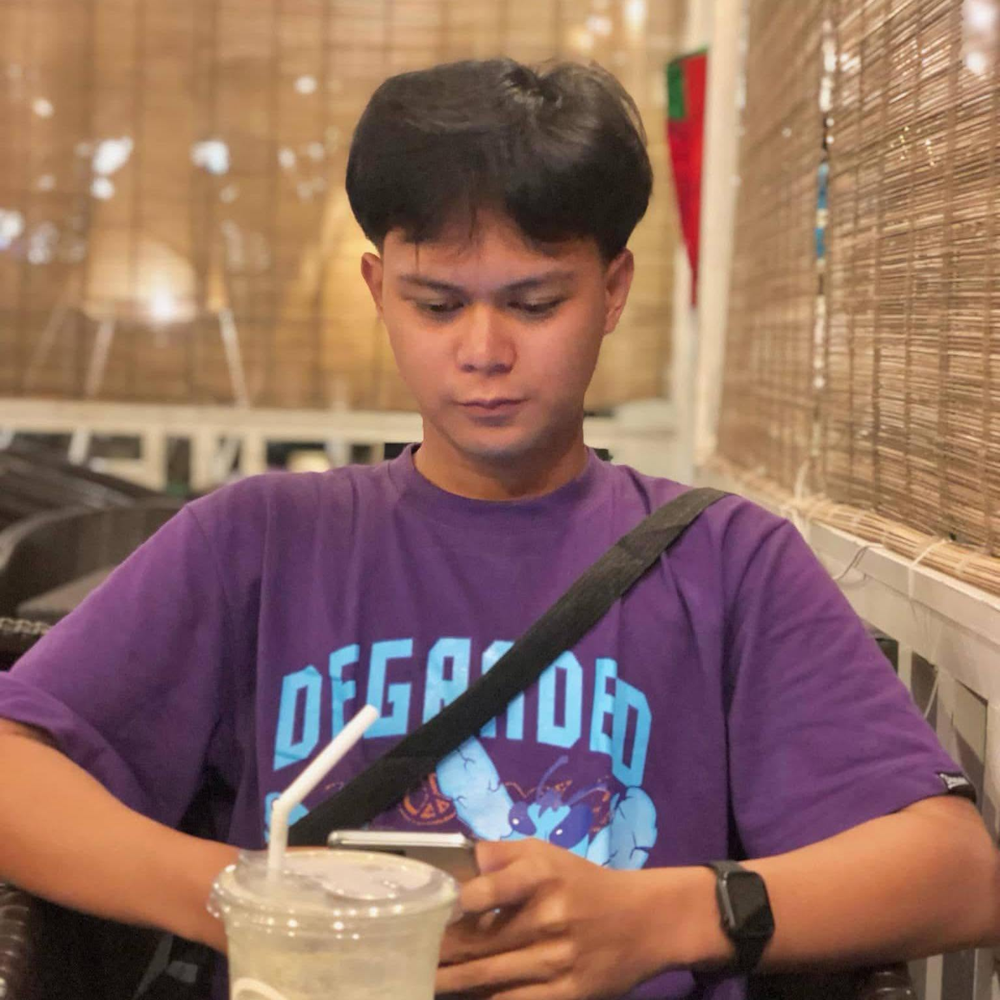

Hi, Im
I am a passionate and goal-driven individual who believes that every challenge is an opportunity to learn something new. I enjoy exploring ideas, developing my skills, and turning creativity into meaningful results. My goal is to continuously improve, create something valuable, and make a positive impact through my work.

Where My Journey Began School: College of Sciences in Communication Technology Strand/Course: Bachelor of Sciences in Information Technoogy Year Level: 2nd Year College Academic Background: Continuous learning and personal development.
School and Community Involvement, Personal Milestones and Achievements, Academic Recognition, Certificate of Participation, Leadership Recognition
Although I am still developing my professional experience, I have gained valuable knowledge through school activities, group projects, and personal experiences. These opportunities have helped me develop responsibility, teamwork, communication, and problem-solving skills.
Listening to Music Reading and Learning Playing Online Games Photography